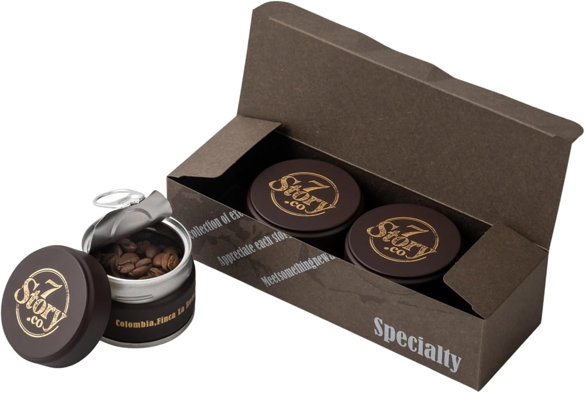
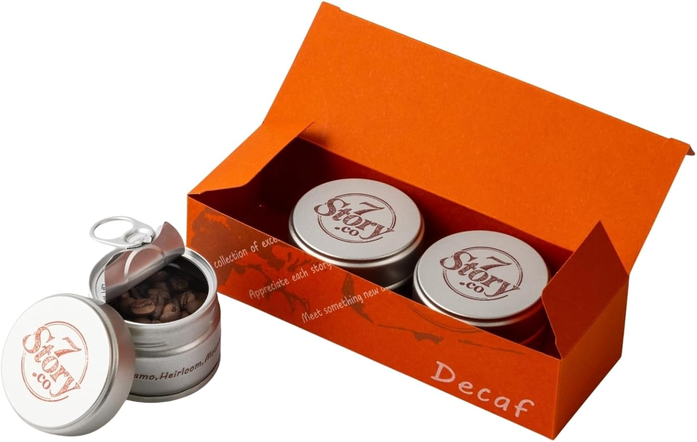
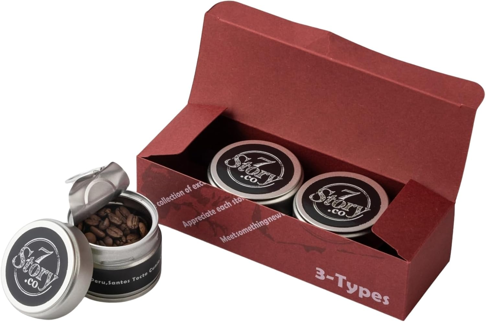
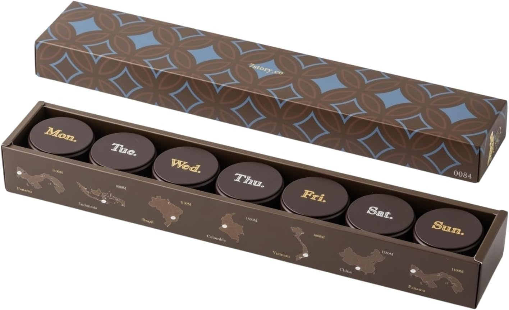
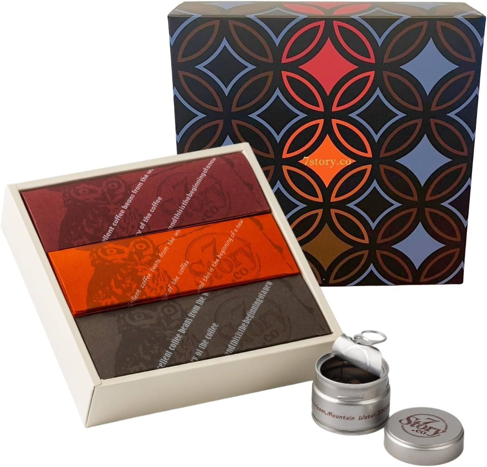

SPECIALTY COFFEE IN A CAN
プルトップを開けた瞬間、豆の香りがふわりと立ちのぼる。7Story.co は、産地と農園のストーリーごと密封した、缶入りのスペシャルティコーヒーです。
CONCEPT
コーヒー豆の香りは、焙煎の瞬間から少しずつ失われていきます。7Story.co が選んだのは、酸素と光を遮断するプルトップ缶。飲むぶんだけ開ける、いちばん贅沢な保存方法です。
01
缶を開けるまで豆は密封されたまま。開封の「プシュッ」という音から、一杯の時間が始まります。
02
缶の側面には産地・農園・標高を刻印。コロンビアの農園から週替わりの7産地まで、豆の背景ごと味わえます。
03
定番のSpecialty、夜でも安心のDecaf、飲み比べの3-Types、毎日違う産地に出会える7 Days。贈り物にも。
LINE UP

SPECIALTY
コロンビアの農園名が刻まれた缶には、カッピング評価をクリアしたスペシャルティグレードの豆だけを詰めています。まずはブランドの基準を知る1箱として。
※缶側面に産地・農園名を記載しています。

DECAF
薬品を使わないマウンテンウォータープロセスで、風味を残しながらカフェインを除去。就寝前や妊娠・授乳期の方への贈り物にも選ばれています。
※製法・標高は缶の刻印に基づきます。

3-TYPES
ペルーの単一農園などタイプの異なる3缶をセットに。同じ淹れ方でも豆でこれだけ変わる——スペシャルティコーヒーの入口にいちばん向いた1箱です。

7 DAYS
Mon.からSun.まで、パナマ・インドネシア・ブラジル・コロンビア・ベトナムなど日替わりの産地を旅する7缶セット。箱には産地の地図と標高が描かれています。

GIFT
コーヒー好きへの贈り物に、物語を。
HOW TO BREW
道具はドリッパー・ペーパー・細口ケトルがあれば十分。5つの基本で、豆の個性はきちんと出ます。
香りは挽いた瞬間から飛び始めます。淹れる直前に中挽き（グラニュー糖くらい）が基準。
豆15gならお湯225mlが目安。スケールで計ると味が安定します。
沸騰直後より少し落ち着いた温度が、雑味を出さないコツ。
粉全体が湿る程度のお湯で30秒。豆のガスが抜けて味が濃く出ます。
中心から「の」の字を描くように2〜3回に分けて。合計3分前後で完成です。
FAQ
生産地から一杯まで品質管理され、専門の評価者によるカッピングで高評価を得たコーヒーのことです。産地ごとの個性ある風味を楽しめるのが特徴です。
はい。缶の中は焙煎豆のままです。風味の持ちは豆のままが圧倒的に有利なので、淹れる直前に挽くのがおすすめです。
缶のフタを閉じて直射日光を避けた常温の暗所へ。開封後は2週間程度で飲み切るのがおすすめです。
薬品を使わず水の力でカフェインを除去するマウンテンウォータープロセスの豆を使用しています（缶の刻印に基づく表記です）。